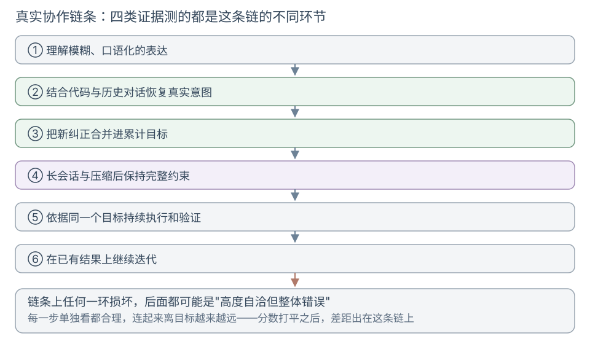
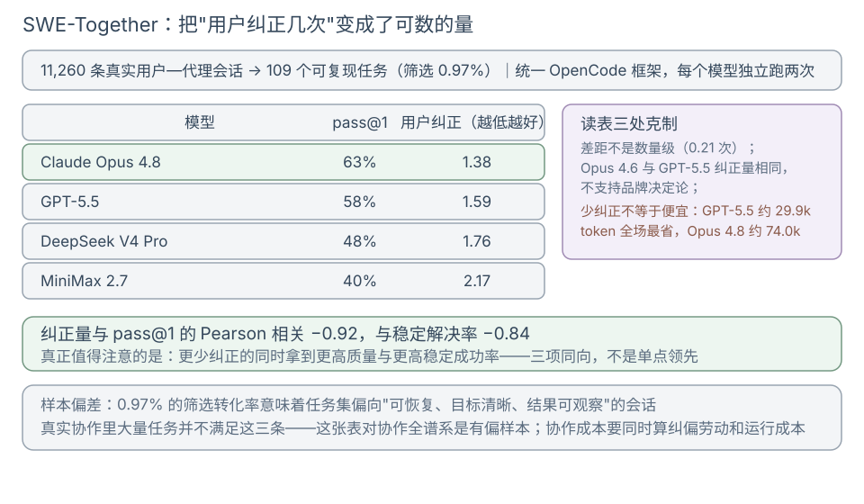
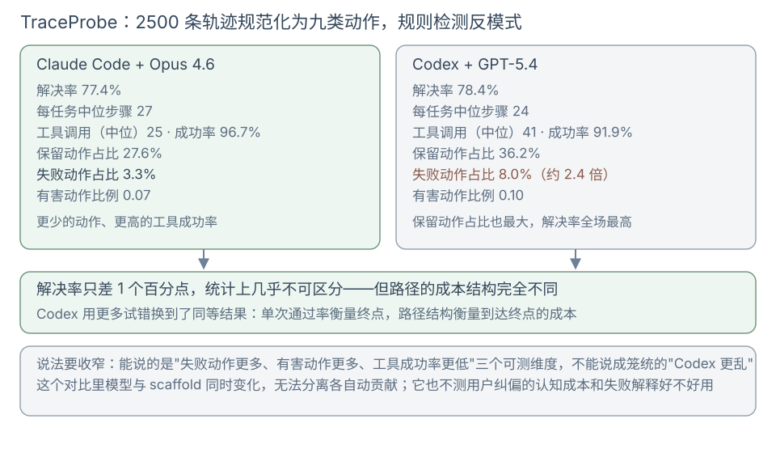
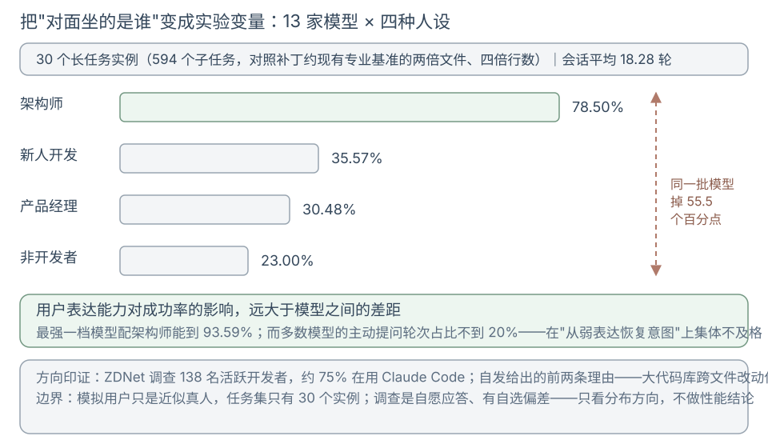
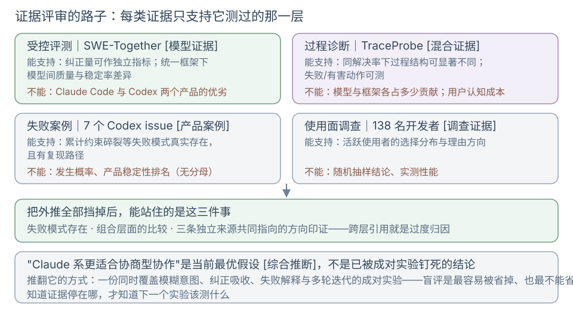

先给一句话答案
单次通过率衡量终点，协作可靠性衡量到达终点的成本
只看排行榜选工具，会遇到一个解释不了的矛盾：Codex 和 Claude Code 的解决率几乎一样（78.4% vs 77.4%），用起来却像两种不同的东西。一个让它改按钮文案，它顺手把后端也重构了；另一个你只说了一半，它把剩下的一半猜对了——两者最终都能"做完"，但你要拦它、纠正它、检查它的力气差得很远。
本文的一句话答案：单次通过率衡量的是终点对不对；协作可靠性衡量的是到达终点的路上你要付出什么、以及失败后爬出来的成本。分数打平之后，赢的是后者。
本文不是"我用过觉得好"，按证据评审的路子走：先立比较框架（§一），再看四类证据各自测到了什么（§二至§五），然后说清这些证据不能证明什么（§六），最后指出还缺哪些指标、以及一个能自己动手的成对实验（§七）。
查看引子与全文路线图 ↗ Markdown 对应段落比较框架
比的不是任务难度，是协作不确定性
把任务分成"简单"和"复杂"信息量很低：跨几十个文件的机械迁移可能几乎没有业务判断，只改五行的需求可能依赖隐含产品语义和历史否决过的方案。真正决定协作难度的是：初始表达多完整、需求多歧义、约束怎么累积、反馈可不可观察、人要介入几次、搞乱了能不能恢复。本文用三条主线评价：任务模型的建立与持续稳定性；总人类协作成本（需求显式化、过程监督、纠偏、恢复四类）；失败的可解释性与可恢复性。

任务模型是代理执行时实际依赖的内部工作表示：用户真正想要的结果、当前代码事实、已确认与未确认的假设、必须保留的约束、明确排除的范围、新消息改了旧目标的哪一部分、当前完成状态与验证标准。
查看三条主线、任务模型定义与协作链条全文 ↗ Markdown 对应段落证据一
SWE-Together：把"用户纠正几次"变成了指标
SWE-Together 从 11,260 条真实会话筛出 109 个可复现任务（0.97%），用用户模拟器按原始会话的意图锚点逐步释放澄清、纠正和新增要求；统一 OpenCode 框架，每个模型独立跑两次。它同时测最终正确性与用户纠正度——"体验差"第一次变成可数的量。

三处克制：差距不是数量级（0.21 次）；"Claude 系列必然更少纠正"不成立；少纠正不等于便宜——GPT-5.5 约 29.9k token 全场最省，Opus 4.8 约 74.0k。协作成本必须同时算纠偏劳动和运行成本。另记样本偏差：0.97% 筛选偏向"可恢复、目标清晰、结果可观察"的任务，对协作全谱系是有偏样本。
查看完整数据表与三处克制的展开 ↗ Markdown 对应段落证据二
TraceProbe：同一终点可以有两条完全不同的路径
TraceProbe 把 2500 条轨迹规范化为九类动作，用确定性规则检测搜索循环、验证遗漏、重复读取、修改回滚等反模式。Claude Code + Opus 4.6 与 Codex + GPT-5.4 的解决率只差 1 个百分点，但过程指标拉开了。

一幅画面：Codex 用更多试错换到了同等结果。说法要收窄——能说的是"失败动作更多、有害动作更多、工具成功率更低"三个可测维度，不能说成笼统的"Codex 更乱"；Codex 解决率最高、保留动作占比也最大。过程结构也不测用户纠偏的认知成本和失败解释好不好用——那恰好是人最累的地方。
查看完整九项指标表与过度归因的收窄 ↗ Markdown 对应段落证据三
七个 issue 证明"累计约束碎裂"是真实失败模式
GitHub issue 能证明的是：某类失败确实发生过、发生在产品哪一层、有没有复现步骤、多个用户是否独立描述了相似症状。它不能证明发生概率——没有"总使用次数"这个分母。所以 issue 在本文里是失败模式的存在性证据，不是失败率排行榜。
七个 2026-10-16 逐一核实的 Codex issue 覆盖：累计约束丢失、重复读取、交接后提前停止、缺少原子化 rollover、长会话上下文失控、过期消息重新执行、声称恢复但未真正继续。最典型的是长会话压缩后遗漏"先文档后代码"这类强制规则、重新引入已明确排除的工作——用户多次重述完整契约，执行仍像只保留了最新一条消息。
两个诚实注记：#33398 讨论里"94 个长任务 27.8% 压缩丢失"是单用户自报、未经官方裁定，只作案例背景；Claude Code 也有同类问题（compact 崩溃、resume 保护未触发、hooks 未加载等）。所以立场不是"一个稳一个不稳"，而是：两者都会失败，现有证据更支持 Claude 的协作错误分布较温和、纠偏成本较低；Codex 更容易出现隐式任务模型损坏并继续执行。[综合推断]
查看七个 issue 对照表与 Claude Code 侧问题入口 ↗ Markdown 对应段落证据四
把用户放成变量：用户是谁，比模型多强更能决定成败
SWE-Journey 把"对面坐的是谁"变成实验变量：30 个长任务实例、四种用户人设驱动平均 18.28 轮的多轮会话。同一批模型，用户从架构师换成非开发者，通过率从 78.50% 掉到 23.00%——落差 55.5 个百分点，远大于模型之间的差距。

这张表是对所有编码 Agent 都成立的结论：协作可靠性由"代理能不能从能力弱的表达里恢复意图"决定，而现有主流 Agent 在这个维度上集体不及格（主动提问轮次占比不到 20%）。谁在澄清与纠偏上更好，谁就握住了真实协作的主要矛盾。
查看人设表、调查理由分布与两条边界 ↗ Markdown 对应段落证据边界
六条外推全部挡掉，四类证据各测到哪一环
四类证据各有明确的能力范围：受控评测测模型层、过程诊断只能比组合、失败案例无分母、使用面调查是自愿应答。把外推挡掉，这些说法不能站住：失败率排行、模型优势等于产品优势、解决率等同协作质量、明确任务的高分外推为擅长模糊协作、调查分布当因果、综合推断当已验证结论。

第 6 条不是免责声明，是本文的产出之一：知道证据停在哪，才知道下一个实验该测什么。"Claude 系更适合协商型协作"是多类证据共同指向的当前最优假设 [综合推断]，尚无同时覆盖模糊意图、纠正吸收、失败解释与多轮迭代的成对实验直接验证。
查看六条不能证明的展开与来源对照表 ↗ Markdown 对应段落还缺什么
两个指标和一份能自己做的成对实验
现有研究测了"纠正了几次"，没测"纠正之后发生了什么"。要补两个量：纠正吸收率——一次纠正之后，既修复了指定问题、又没有破坏其他仍有效约束的比例；恢复成本——跑偏之后需要多少用户 token、多少分钟、多少轮才能回到正确方向。这两个指标合起来，才分得清"每次都做对"和"错了能便宜地爬出来"两种能力——后者正是本文主张的核心。
想验证个人体感有没有统计稳定性，最小可做版本：同一真实项目、成对任务、固定 commit 权限工具与时间预算，每个任务独立跑至少 10 次；不把一方的澄清答案复制给另一方；保存完整轨迹，交给不知情的评审者盲评。任务覆盖七种类型（模糊口语需求、上下文恢复、局部纠正、冲突约束、跨压缩长会话、连续追加需求、故意给做不了的任务）；指标别只报平均分——同时报中位数、90 分位监督成本、最坏 10% 的失败、同任务方差和失败类型分布。盲评是最容易被省掉、也最不能省的一步。
查看两个指标定义、七类任务与完整指标清单 ↗ Markdown 对应段落结论
体验是五项相乘，不是峰值能力
如果把编码代理理解成"从完整规格到代码的执行工具"，Codex 与 Claude Code 的差距可能有限——Codex 在明确任务上很强，还更省 token。如果把编码代理理解成"与人共同发现目标、吸收纠正、持续演化软件的协作者"，四类证据（受控评测、过程诊断、失败案例、使用面调查）都更支持 Claude 系。
真正决定体验的不是峰值能力，是五项相乘：自然意图理解 × 任务模型稳定性 × 低人工纠偏成本 × 失败透明度 × 恢复与持续迭代能力。这也是评测该从"任务通过率"转向"协作可靠性"的原因——SWE-Together 和 SWE-Journey 已经开始这么做了。
对你个人的选型，最实用的一句是：先问"拉回来的成本是多少"，再问"分数多高"。本文所有数字性断言都可独立复核（论文、公开数据与 issue 原文见 md 对应段落）。
查看结论全文与复核方式 ↗ Markdown 对应段落展开完整深入版
为什么最好用的是 Claude Code：分数打平之后，赢在协作可靠性
讲解版入口：配套 10 分钟图文版在
阅读/讲解-05-为什么最好用的是 Claude Code.html；评价框架对应本文 §一，过程诊断对应 §三，交互侧证据对应 §五，边界对应 §六，还缺什么对应 §七。
断言标注约定：本文关键判断按证据形态标注——
[模型证据]（统一框架下的受控或半受控评测，直接测得）、[框架与模型混合证据]（模型与代理框架同时变化，只能支持"组合"层面比较）、[产品案例]（具体 issue/日志，只证明失败模式存在，无分母）、[用户侧调查证据]（自愿应答调查，有自选偏差）、[综合推断]（多类证据共同指向，但尚无缝合成对实验）。无标注的为可直接核对的定义或公开事实。
引子：分数打平之后，为什么体验是一头一尾
如果你只看排行榜选工具，会遇到一个解释不了的矛盾：Codex 和 Claude Code 的解决率几乎一样，用起来却像两种不同的东西。
一个常见画面：让它改一个按钮的文案，它顺手把后端也重构了；另一个你只说了一半，它把剩下的一半猜对了。两者最终都能"做完"，但你要花的力气差得很远——前者你要拦它、纠正它、检查它改了哪些不该改的地方。
一句话答案：单次通过率衡量的是终点对不对；协作可靠性衡量的是到达终点的路上你要付出什么、以及失败后爬出来的成本。分数打平之后，赢的是后者。
本文不是"我用过觉得好"。它按证据评审的路子走：先立比较框架（§一），再看四类证据各自测到了什么（§二至§五），然后说清这些证据不能证明什么（§六），最后指出还缺哪些指标、以及一个能自己动手的成对实验（§七）。
一、先立框架：比的不是任务难度，是协作不确定性
把任务分成"简单"和"复杂"，信息量很低。一个跨几十个文件的机械迁移可能很长，却几乎没有业务判断；一个只改五行的需求可能依赖隐含的产品语义、历史否决过的方案和接口契约，反而更难。
真正决定协作难度的变量是这些：初始表达有多完整、依赖多少上下文、需求有多歧义、约束怎么累积、反馈可不可观察、路径有多长、人要介入几次、搞乱了能不能恢复、压缩会损失什么、失败透不透明。
由此，本文用三条主线评价协作可靠性：
- 任务模型的建立与持续稳定性；
- 总人类协作成本——至少含四类：需求显式化成本（你要把意图写得多像规格书）、过程监督成本（要不要盯着）、纠偏成本（指出错误后几轮才被吸收）、恢复成本（乱了之后能修，还是只能重开）；
- 失败的可解释性与可恢复性。
任务模型是代理执行时实际依赖的内部工作表示，至少包含：用户真正想要的结果、当前代码和环境事实、已确认与未确认的假设、必须保留的约束、明确排除的范围、后续消息改了旧目标的哪一部分、当前完成状态与验证标准。
真实协作链条是：
理解模糊、口语化的表达
→ 结合代码与历史对话恢复真实意图
→ 把新纠正合并进累计目标
→ 长会话与压缩后保持完整约束
→ 依据同一个目标持续执行和验证
→ 在已有结果上继续迭代
链条上任何一环损坏，后面都可能是"高度自洽但整体错误"——每一步单独看都合理，连起来离目标越来越远。这个判断是本文后面所有证据的挂点：四类证据测的其实都是这条链的不同环节。
二、证据一：SWE-Together 把"用户纠正几次"变成了指标
SWE-Together（arXiv 2606.29957，2026-06-29 提交）从 11,260 条真实用户—代理会话中筛出 109 个可复现的仓库级任务（转化率约 0.97%），用 LLM 用户模拟器按原始会话的意图锚点逐步释放澄清、纠正和新增要求；统一使用 OpenCode 框架，每个模型独立跑两次。它同时测最终正确性与用户纠正度（明确纠正记全权重，软性提醒记 0.2 权重）。[模型证据]（预印本，方法与代码公开）
| 模型（统一 OpenCode 框架） | pass@1 | 两次均成功 pass² | 稳定解决率 SSR | 平均质量 | 用户纠正（越低越好） |
|---|---|---|---|---|---|
| Claude Opus 4.8 | 63% | 52% | 59% | 0.801 | 1.38 |
| GPT-5.5 | 58% | 48% | 55% | 0.763 | 1.59 |
| Claude Opus 4.6 | 58% | 46% | 58% | 0.755 | 1.59 |
| GLM-5.2 | 55% | 42% | 48% | 0.735 | 1.53 |
| GLM-5.1 | 52% | 35% | 49% | 0.729 | 1.54 |
| DeepSeek V4 Pro | 48% | 29% | 38% | 0.679 | 1.76 |
| MiniMax 2.7 | 40% | 26% | 34% | 0.630 | 2.17 |
这张表的价值在于它把"体验差"变成可数的量：纠正量与 pass@1 的 Pearson 相关是 −0.92，与稳定解决率是 −0.84。也就是说，"能力越强 → 用户纠正越少"在这批任务上成立得相当强，所以纠正次数可以当作独立指标用。
读这张表要克制三处：
- 差距不是数量级。Opus 4.8 与 GPT-5.5 的平均纠正差 0.21 次。真正值得注意的是 Claude 在更少纠正的同时拿到更高质量和更高稳定成功率——三项同向，而不是单点领先。
- "Claude 系列必然更少纠正"不成立。Opus 4.6 与 GPT-5.5 的纠正量完全相同（1.59）。版本与能力水平仍然重要，这条证据不支持任何"品牌决定论"。
- 少纠正不等于便宜。论文同时报了效率：GPT-5.5 每任务约 29.9k token、10.7 分钟，全场最省；Opus 4.8 约 74.0k token、23.3 分钟。纠正更少，token 消耗明显更高。"协作成本"必须同时算纠偏劳动和运行成本，这是选型时真实的权衡，不是可以藏起来的一栏。
还有一处必须说明的样本偏差：0.97% 的筛选转化率意味着任务集偏向"有可恢复仓库状态、目标清晰、结果可观察"的会话。真实协作里大量任务并不满足这三条，所以这张表对协作全谱系是有偏样本。
三、证据二：TraceProbe 显示同一终点可以有两条完全不同的路径
TraceProbe（arXiv 2607.06184，2026-07-07 提交）把 2500 条轨迹（SWE-Bench Verified 与五个生产设置，横跨 Claude Code / Codex / OpenCode 三个 scaffold 与 Opus 4.6 / GPT-5.4 / GLM-5 三个模型骨干）规范化为九类动作，用确定性规则检测搜索循环、验证遗漏、重复读取、修改回滚等反模式。数据与代码公开（Zenodo DOI 10.5281/zenodo.20789918）。[框架与模型混合证据]（审稿中预印本）
| 指标 | Claude Code + Opus 4.6 | Codex + GPT-5.4 |
|---|---|---|
| 解决率 | 77.4% | 78.4% |
| 每任务中位步骤 | 27 | 24 |
| 工具调用（中位） | 25 | 41 |
| 工具成功率 | 96.7% | 91.9% |
| 保留动作占比 | 27.6% | 36.2% |
| 失败动作占比 | 3.3% | 8.0% |
| 有依据动作占比 | 36.9% | 32.0% |
| 范围外探索 | 17.6% | 14.3% |
| 有害动作比例 | 0.07 | 0.10 |
这几行合起来是一幅画面：Codex 用更多试错换到了同等结果。工具调用中位数 41 对 25，工具成功率却更低（91.9% 对 96.7%），失败动作占比是 2.4 倍。解决率只差 1 个百分点，统计上几乎不可区分，但路径的成本结构完全不同。
这里必须收窄说法，否则就成了过度归因。论文自己也指出：Codex 的解决率最高，保留动作占比也最大。所以能说的是"失败动作更多、有害动作更多、工具成功率更低"这三个可测维度，不能说成笼统的"Codex 更乱"。另外，这个对比里模型和 scaffold 同时变化，无法分离各自动贡献；研究本身也没做完 Claude Code × GPT 与 Codex × Claude 的完整交叉。
过程结构也不是全部。它不测用户纠偏的认知成本，也不测失败解释好不好用——这两件事恰好是人最累的地方，而它们只能靠 §五 的交互实验和 §七 提的指标去逼近。
四、证据三：七个 issue 证明"累计约束碎裂"是真实失败模式
GitHub issue 能证明的是：某类失败确实发生过、发生在产品哪一层、有没有复现步骤、多个用户是否独立描述了相似症状、官方是否承认并修复。它不能证明发生概率，也不能给产品排名——因为没有"总使用次数"这个分母。
所以本文把 issue 当失败模式的存在性证据，不当失败率排行榜。
Codex 侧（7 例，均于 2026-10-16 逐一打开核实）
| 失败模式 | 代表案例 | 能支持的结论 |
|---|---|---|
| 累计约束丢失 | openai/codex #33262 | 长会话压缩后可能保留不完整任务契约 |
| 重复读取 | #33498 | 上下文利用可能退化为重复搜索 |
| 交接后提前停止 | #33398 | task handoff 未必可靠恢复执行状态 |
| 需要原子化 rollover | #33310 | 社区认为长任务交接缺少稳定契约 |
| 长会话上下文失控 | #33769 | 用户需要主动控制进入上下文的内容 |
| 过期消息重新执行 | #33819 | 会话队列错误可能导致旧意图重新生效 |
| Goal 恢复不执行 | #33829 | 声称继续与实际继续可能不一致 |
其中 #33262 报告的场景最典型：报告者在长仓库任务中不断增加明确约束，并声明后续消息只修改指定部分、其余规则继续有效；上下文压缩后，Codex 能近似描述任务，却遗漏"先文档后代码"这类强制规则、重新引入已明确排除的工作，把完整交付缩减为几个通用步骤。用户多次重述完整契约，后续执行仍像只保留了最新一条消息。
有一个诱人的量化说法要挡住：#33398 的后续讨论里，报告者自报"94 个长任务中 27.8% 的压缩事件出现丢失继续"，但这只是单用户自报、未经官方裁定，只能作案例背景，不能进本文的数字体系。
Claude Code 也有同类问题：/compact 崩溃或重复执行、resume-from-summary 保护未触发、context thrashing、中途切换模型后压缩窗口错误、hooks 未加载、模型忽略指令、后台会话恢复异常，都能在它的仓库里找到报告（搜索入口见附录 C）。
所以本文的立场不是"一个稳、一个不稳"，而是：两者都会失败，现有证据更支持 Claude 的协作错误分布较温和、纠偏成本较低；Codex 更容易出现隐式任务模型损坏并继续执行。[综合推断]
五、证据四：把用户放成变量，把使用面摆上桌面
前三条证据都在测模型或产品。这一节补两块更接近真实使用的东西：用户能力的影响，和活跃开发者的选择分布。
1. SWE-Journey：用户是谁，比模型多强更能决定成败
SWE-Journey（arXiv 2610.11559，2026-10-08 提交）把"对面坐的是谁"变成实验变量：合成 30 个长任务实例（594 个子任务，对照补丁平均 10.2 个文件、768 行，约为现有专业基准的两倍文件、四倍行数），再用四种用户人设驱动多轮会话——非开发者、产品经理、新人开发、架构师。会话平均 18.28 轮，远长于旧基准的 5~9 轮。[模型证据]（预印本，未见公开代码）
13 家模型、四种人设的均值：
| 用户人设 | 终点失败转通过率 |
|---|---|
| 架构师 | 78.50% |
| 新人开发 | 35.57% |
| 产品经理 | 30.48% |
| 非开发者 | 23.00% |
同一批模型，用户从架构师换成非开发者，通过率掉 55.5 个百分点；最强一档模型配架构师能到 93.59%，而多数模型的主动提问轮次占比不到 20%。
这张表不是 Claude 与 Codex 的对比，它是对所有编码 Agent 都成立的结论。但它正好落在本文第二条主线上：协作可靠性由"代理能不能从能力弱的表达里恢复意图"决定，而现有主流 Agent 在这个维度上集体不及格。谁在澄清与纠偏上更好，谁就握住了真实协作的主要矛盾。
边界也要给足：用户智能体只是近似真人，任务可能带着仓库与模型偏好，成本把规模卡在 30 个任务。
2. 开发者调查：75% 的活跃用户选了 Claude Code，理由分布说明了什么
ZDNet 在 2026-10 对 138 名正在使用 AI 编码工具的开发者做了调查：约 75% 使用 Claude Code，约三分之一使用 Codex，22% 两者都用。[用户侧调查证据]（自愿应答样本，有自选偏差；只看分布方向，不看绝对值）
选择 Claude Code 的理由，按被提及的频率：
- 大代码库跨文件改动保持连贯（14%）——对应"任务模型稳定性"；
- 先计划再动手，复杂重构中需要更少纠正（9%）——对应"纠偏成本"；
- 同任务代码质量与推理更好（9%）；
- 在终端里对真实仓库和真实基础设施执行，而不是编辑器里的自动补全（7%）；
- 先发者的 skills、集成与工作流生态已成规模，切换成本实打实（5%）。
这张表本身不能当性能证据：自愿应答不是随机抽样，"理由分布"反映的是感知而非实测，调查时点两侧模型都在快速迭代。它的用处只有一个——方向印证。开发者自发给出的前两条理由，恰好落在 SWE-Together 和 TraceProbe 测出的那两个维度上；三条独立来源（受控评测、过程诊断、使用感知）指向同一处，比任何单条都更值得当假设用。
同一份调查里也有人指出 Codex 的优势：单位任务成本更低、PR review 更强、最难的单题推理更深。这不是反例，而是印证了本文"执行器强、协作弱"的画像——两件事可以同时成立。
六、证据不能证明什么
把前面四类证据的外推全部挡掉，只剩这些能站住：
- 不能说失败率排行。GitHub issue 没有使用量分母；SWE-Together 只有 109 个经 0.97% 筛选的高精度任务。两者都只支撑"失败模式存在"，不支撑"多久失败一次"。
- 不能把模型优势当成产品优势。SWE-Together 的 Claude 优势是在统一 OpenCode 框架下测的，属模型层证据；Claude Code 产品自己的框架层（压缩策略、上下文管理、权限流）是另外一组变量，没被单独测过。
- 不能把解决率等同协作质量。TraceProbe 已经展示：同样的解决率下，失败动作与有害动作可以差 2~2.4 倍。
- 不能把明确任务的高分外推为"擅长模糊协作"。Terminal-Bench 这类任务目标明确、验收清晰，恰好绕开了本文的三条主线。
- 不能把调查分布当因果。方向可用，比例不可引用。
- 不能把本文的综合推断当已验证结论。"Claude 更适合协商型协作"是多类证据共同指向的当前最优假设，尚无同时覆盖模糊意图、纠正吸收、失败解释与多轮迭代的成对实验直接验证。
第 6 条不是免责声明，它是本文的产出之一：知道证据停在哪，才知道下一个实验该测什么。
七、还缺什么：两个指标和一份能自己做的实验
1. 最该补的两个指标
现有研究测了"纠正了几次"，没测"纠正之后发生了什么"。要补的两个量：
- 纠正吸收率 = 一次纠正之后，既修复了指定问题、又没有破坏其他仍有效约束的比例。它是"任务模型是否增量更新"最直接的可测代理。SWE-Together 只数了次数，这一层是空的。
- 恢复成本 = 跑偏之后，需要多少用户 token、多少分钟、多少轮才能回到正确方向。它把"最后我干脆重开了"这种体验变成可比数字。
这两个指标合起来，才把"纠偏的认知劳动"从抱怨变成可复核的量，也才分得清"每次都做对"和"错了能便宜地爬出来"这两种能力——后者正是本文主张的核心。
2. 一份可自己执行的成对实验
想验证个人体感有没有统计稳定性，最小可做版本是这样：
同一真实项目、相同初始状态、成对任务；两边各用推荐的前沿模型；固定 commit、权限、工具和时间预算；每个任务独立跑至少 10 次；不把一方的澄清答案复制给另一方；保存完整轨迹，交给不知情的评审者盲评。
任务类型至少覆盖七种：模糊口语需求、上下文恢复、局部纠正、冲突约束、跨压缩长会话、连续三轮追加需求、故意给一个做不了的任务。
指标别只报平均分：首轮目标复述准确率、主动澄清有效率、用户纠正次数与字数、约束保持率、纠正吸收率、假完成率、严重跑偏率、可恢复率、持续迭代率、人工审查分钟。结果同时报中位数、90 分位监督成本、最坏 10% 的失败、同任务方差、"一次成功"与"连续两次都成功"、失败类型分布、可恢复与必须重开各占多少。
只有一件事会让这个实验作废：把两边的对话记录混着看，或者评审者知道哪份是哪个产品。盲评是整个设计里最容易被省掉、也最不能省的一步。
八、结论
如果把编码代理理解成"从完整规格到代码的执行工具"，Codex 与 Claude Code 的差距可能有限——Codex 在明确任务上很强，还更省 token。如果把编码代理理解成"与人共同发现目标、吸收纠正、持续演化软件的协作者"，四类证据（受控评测、过程诊断、失败案例、使用面调查）都更支持 Claude 系。
真正决定体验的不是峰值能力，是这五项相乘：
自然意图理解 × 任务模型稳定性 × 低人工纠偏成本 × 失败透明度 × 恢复与持续迭代能力
这也是为什么编码代理的评测该从"任务通过率"转向"协作可靠性"——SWE-Together 和 SWE-Journey 已经开始这么做了。而对你个人的选型，最实用的一句是：先问"拉回来的成本是多少"，再问"分数多高"。
复核方式
本文的数字性断言都可独立复核：SWE-Together 的论文与公开代码（github.com/Togetherbench/SWE-Together）、TraceProbe 的轨迹数据（Zenodo DOI 10.5281/zenodo.20789918）、SWE-Journey 论文（arXiv 2610.11559）、七个 Codex issue 原文（附录 B）均公开可查。所有数字于 2026-10-16 逐项核对，2026-10-21 增补第六节证据后复核；如论文改版与本文不一致，以原始来源为准。
证据边界声明
范围：适用于正文全部带标注的判断，也适用于未标注但涉及模型行为的描述。
[模型证据]来自公开评测：SWE-Together 与 SWE-Journey 都是预印本，前者有公开代码、后者未见；两者都是模拟用户而非真人，能支持机制性判断，不能直接给出某款产品在你自己仓库里的表现。[框架与模型混合证据]（TraceProbe）里模型与 scaffold 同时变化，只能支持"组合"层面比较，不能把差异归给模型或框架中的任一方。[产品案例]来自公开 issue，无分母，只证明失败模式存在与形态，不证明发生率。[用户侧调查证据]是自愿应答样本，只取方向，不引用比例做性能结论。[综合推断]是本文的判断，不是被实验钉死的结论；推翻它的方式是 §七 那份成对实验，或出现同时覆盖模糊意图、纠正吸收、失败解释与多轮迭代的受控研究。
各类来源分别支持什么
| 来源 | 能支持的判断 | 不能直接证明的判断 |
|---|---|---|
| SWE-Together（arXiv 2606.29957） | 多轮会话中用户纠正量可作为独立能力指标；统一框架下模型间质量与稳定率差异 | Claude Code 与 Codex 两个产品的优劣 |
| TraceProbe（arXiv 2607.06184） | 同等解决率下过程结构可显著不同；失败/有害动作可测 | 模型与框架各占多少贡献；用户认知成本 |
| SWE-Journey（arXiv 2610.11559） | 用户表达能力对成功率的影响远大于模型间差距；主动澄清普遍不足 | 真实人类用户的体验；两个产品正面对比 |
| Codex GitHub issue ×7 | 累计约束碎裂等失败模式真实存在且有复现路径 | 发生概率、产品稳定性排名 |
| ZDNet 开发者调查（138 人） | 活跃使用者的选择分布与理由方向 | 随机抽样结论、实测性能 |
| Claude Code issue 搜索入口 | Claude Code 同样存在压缩、恢复、指令失效问题 | "Claude Code 天然稳定" |
参考资料
- SWE-Together: Evaluating Coding Agents in Interactive User Sessions（2026-06-29 提交；预印本，方法与代码公开）
- SWE-Together GitHub（可复现任务构造、模拟用户与评价方法）
- What Resolve Rate Hides: Trajectory Structure Diagnostics for Coding Agents（2026-07-07 提交；审稿中预印本，数据公开）
- TraceProbe 开放数据
- SWE-Journey（arXiv 2610.11559）（2026-10-08 提交；预印本，作者称流水线后续开源）
- METR Task-Completion Time Horizons（页面最近更新 2026-09-08，已声明不再活跃更新）
- ZDNet：75% of developers I surveyed prefer Claude Code（2026-10；138 名自愿应答开发者）
附录 A：Codex 产品案例（均于 2026-10-16 逐一打开核实）
- #33262：长会话丢失累计操作约束
- #33498：代理重复读取上下文中未变化的文件
- #33398：task handoff 后提前停止
- #33310：请求原子化上下文 rollover
- #33769：长会话主动排除上下文
- #33819：旧用户消息被再次投递并执行
- #33829：声称恢复计划但未真正继续
以上用于证明失败模式存在，不用于估计实际发生率。
附录 B：Claude Code 产品案例入口
以上说明 Claude Code 也存在压缩、恢复、权限与指令失效问题，不支持"Claude Code 天然稳定"的绝对判断。
Changelog
- v4（2026-10-27，按 SHOW v3.1 重写）
- 结构：按"证据评审"篇型重排为 结论→框架→四类证据→不能证明什么→还缺什么→结论（原 v3 的六个"证据不能证明什么"边界段散在各节末尾，现归并到 §六一处；原 §七"证据不能证明什么"与 §八 综合结论合并压缩）；
- 补回：§七「还缺什么」为 v2 有、v3 删掉的内容（纠正吸收率、恢复成本、可执行成对实验）；这两个指标是全文唯一把"结论"接回"怎么自己验证"的部分，删掉后文章只剩判断题、没有操作题；
- 删除：三处"这张表不能告诉你什么"套话改为表后正文一句真边界（SHOW-M02 v3.1 明确不强制补套话）；正文里"这一节是某版本新增的""更新版新增"等版本自述，改由本 Changelog 承担；
- 降级：任务模型碎裂图中"每次纠正有 50% 概率掷骰子"的说法删除——修辞化的伪百分比最容易被当成测量值引用，改为"每一次纠正都要重新猜一次是修复还是覆盖"；
- 补边界：#33398 的单用户自报数字（94 任务 / 27.8%）显式标为案例背景、不进数字体系；SWE-Together 的 0.97% 筛选偏差写进 §二正文（原仅在边界节出现）；
- 未改：全部承重数字、引用编号、标注等级与结论口径（含"尚未有成对实验"这一自我设限）保持原样；无新增未经核实的数字。
- v3（2026-10-21）：更名、压缩叙述、新增交互侧证据（SWE-Journey、ZDNet 调查）。v2（2026-10-16）完成全量数据核实，含示意对照会话与用户观察方法说明。v1（2026-07-17）初版。